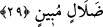

sanki şöyle denmektedir: De ki bizler Peygamberler ve müminler olarak Allah’tan bizi
günahımız sebebiyle hesaba çekeceği için korktuğumuza göre, sizler kâfir iken bu azâbın
başınıza gelmesine kim engel olabilir? Sizler bu derece günah işlediğiniz hâlde neden
korkmuyorsunuz? Buna göre “ehlekenâ” yâni beni ve beraberimdekileri yok etse fiilinin
mânâsı “bize azap etse” şeklinde; “rahimenâ” fiilinin mânâsı da Celâleyn Tefsirinde
ifâde olunduğu gibi “bizleri bağışlasa” şeklindedir.
29. De ki: (Sizi îmâna dâvet ettiğimiz) O (Allah) çok esirgeyicidir; biz O’na îman
etmiş ve sırf O’na güvenip dayanmışızdır. Siz kimin apaçık bir sapıklık içinde
olduğunu yakında öğreneceksiniz!
Ey yaratıkların en şefkatlisi “De ki: (Sizi îmâna dâvet ettiğimiz) O (Allah) çok
esirgeyicidir.” Yâni ibâdetine sizleri çağırmış olduğum Allah Teâlâ bütün nimetleri
veren ve sizlere ulaştırandır. “Biz” bir olan “O’na îman etmiş ve sırf O’na güvenip
dayanmışızdır.” Çünkü biz biliyoruz ki O’ndan başka her şey ya nimettir ya da nimet
görendir. Biz sizlerin inkâr ettiği gibi onu inkâr etmiyoruz. Burada “biz inandık” fiili,
“O’na” anlamına gelen “bihi” kelimesinden önce getirilerek kâfirlere bir ta’rizdir.
Çünkü “inandık” fiili, kâfirlerin zikredilmelerinin hemen ardından getirilmiştir. “Aleyhi
tevekkelnâ” yâni “O’na güvenip dayanmışızdır” demek; biz bütün işlerimizi sizin
yaptığınız gibi O’ndan başkalarına değil, sâdece O’na havâle etmişizdir. Oysa sizler
kendi adamlarınıza ve mallarınıza güvenmektesiniz demek olur. Bizler ise Allah’tan
başkasının kim olursa olsun kesinlikle herhangi bir fayda ve zarar veremeyeceğini
bildiğimiz için sâdece O’na güvenmişizdir. Âyette “aleyhi” yâni “O’na” ifâdesinin
“güvenme” fiilinden önce getirilmesi, kendisine güvenilme noktasında Allah’ın tek ve
biricik olmasından dolayıdır.
Ey Mekke kâfirleri “siz kimin” bizim mi sizin mi “apaçık bir sapıklık içinde
olduğunu yakında” azâbı gördüğünüzde “öğreneceksiniz.”
Âyette yer alan “men” kelimesi soru edâtı olabileceği gibi, ism-i mevsul de olabilir.
Âyette yer alan “dalâlin mübîn”; yâni açık bir sapıklık ifâdesi “apaçık bir hatâ”
anlamınadır.
Bu âyet-i kerîmeyi et-Te’vilâtü’n-necmiyye şu şekilde tefsir ediyor: Biz başkasına
değil Allah’ın tam feyzine, her şeyi kuşatan lütfuna bütün benliğimizle güvenip
dayanmışızdır. Sizler kimin apaçık bir sapıklık içinde olduğunu yâni kimin o
nimetlerden kendisine verilmesini dileyerek O’na yöneldiğini ya da O’nu inkâr ederek
kimin kendisinden yüz çevirmiş olduğunu yakında öğreneceksiniz.